山梨ならでは、ワイン染め体験
DYEING WITH WINEワインの香りに包まれる、
特別な染め時間。
せわしない日常から離れる
ゆったりとした染め時間。
藍染めのように何度も染めを繰り返す「動」の体験とは異なり、ワイン染めは色が染み込むのをじっくりと待つ「静」の体験です。
日常の喧騒を忘れ、ゆったりとした時間の流れを感じてください。
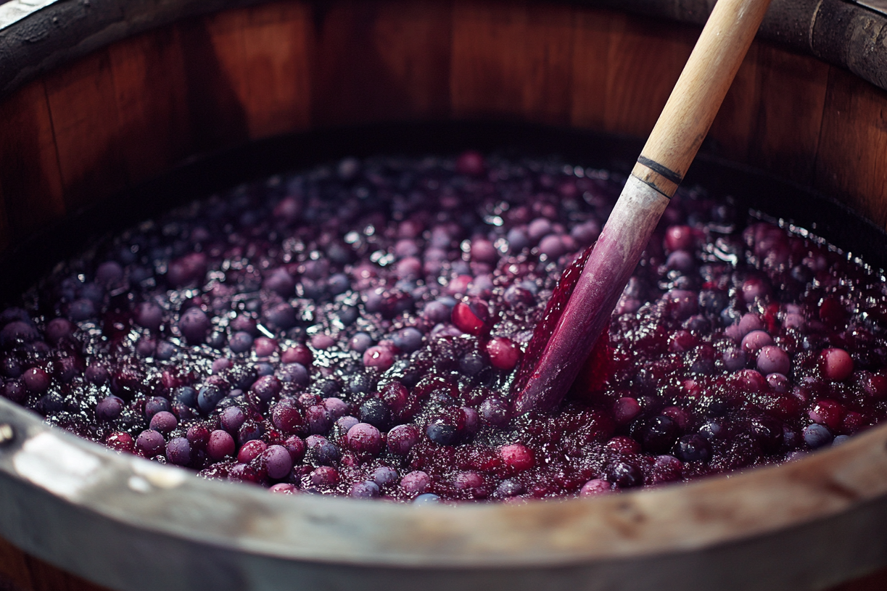
廃棄される葡萄皮に、
新たな価値を。
Sustainable & Upcycling
山梨は、日本有数の葡萄・ワインの産地です。その一方で、ワインづくりの過程で生まれる「葡萄の搾りかす（ワインパミス）」は、産業廃棄物として処理されることが多いという課題があります。
「この搾りかすを、もう一度価値あるものとして活かせないだろうか」
その想いから、富士山の伏流水と掛け合わせることで生まれたのが、このサステナブルなワイン染めです。大自然と地域資源が生み出す、深みのある唯一無二の鮮やかなピンク色をお楽しみください。
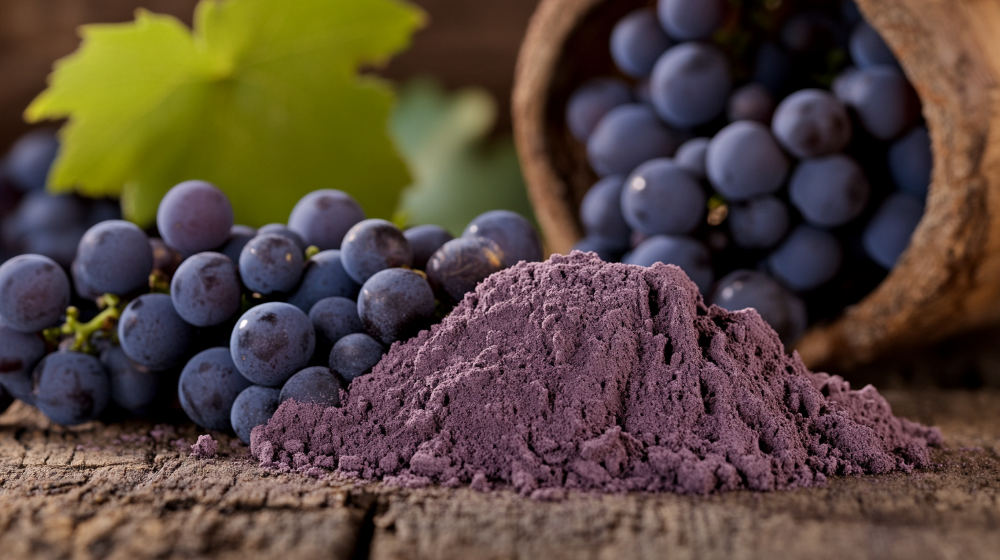
COLOR
葡萄から生まれる、鮮やかな発色
想像以上の色を､自然の力で
葡萄を絞ったあとの皮や果実を使用し、さらにハーブを組み合わせることで、深みのあるはっきりとした色味を引き出します。
想像以上にしっかりと色が入り、自然素材とは思えないほど印象的な発色に仕上がります。
一枚一枚、微妙に異なる表情を持つ、唯一無二の染め上がりです。
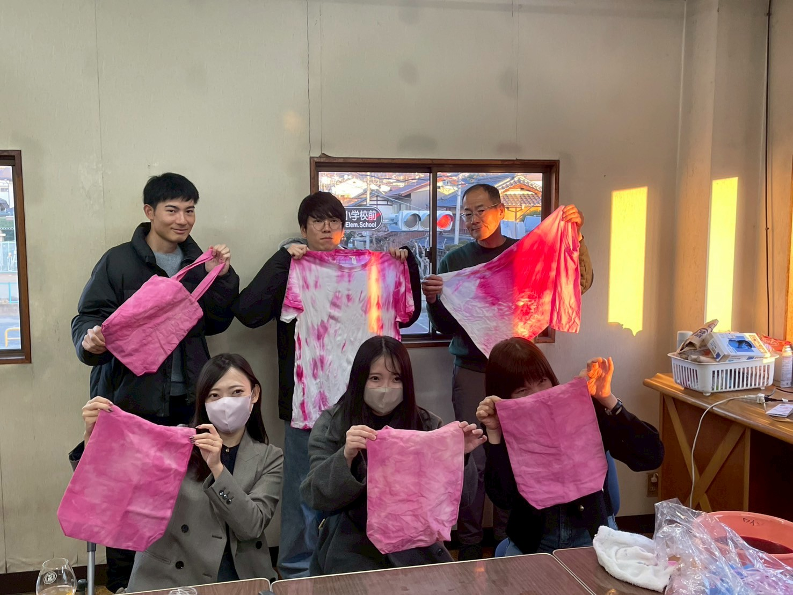
DURABILITY
色を”保つ”ための工夫
自然染料のみでは、洗濯による色落ちが課題になります。
そこで、風合いを損なわない範囲で化学染料を少量加え、色の定着を高めています。
サステナブルでありながら、使い続けられる染色を実現しました。
FOR YOU
こんな方におすすめ
山梨旅行中の方
旅の記念に、自分だけの一枚を。山梨ならではのワイン染めが、旅をより特別な思い出に変えます。
サステナブルに関心のある方
廃棄される葡萄の搾りかすを活用したアップサイクル体験。環境に配慮しながら、新しい価値を生み出す取り組みに参加できます。
プレゼントを探している方
世界に一枚だけの染め物は、特別な贈り物に。体験チケットをプレゼントするのもおすすめです。
カップル・お友達と
一緒に作る時間そのものが思い出に。染め上がりの違いを見せ合う楽しみも体験の醍醐味です。
体験型観光を求めている方
ただ見るだけじゃない旅を。手を動かし、完成品を持ち帰れる体験型観光として人気です。
THE EXPERIENCE
体験の流れ
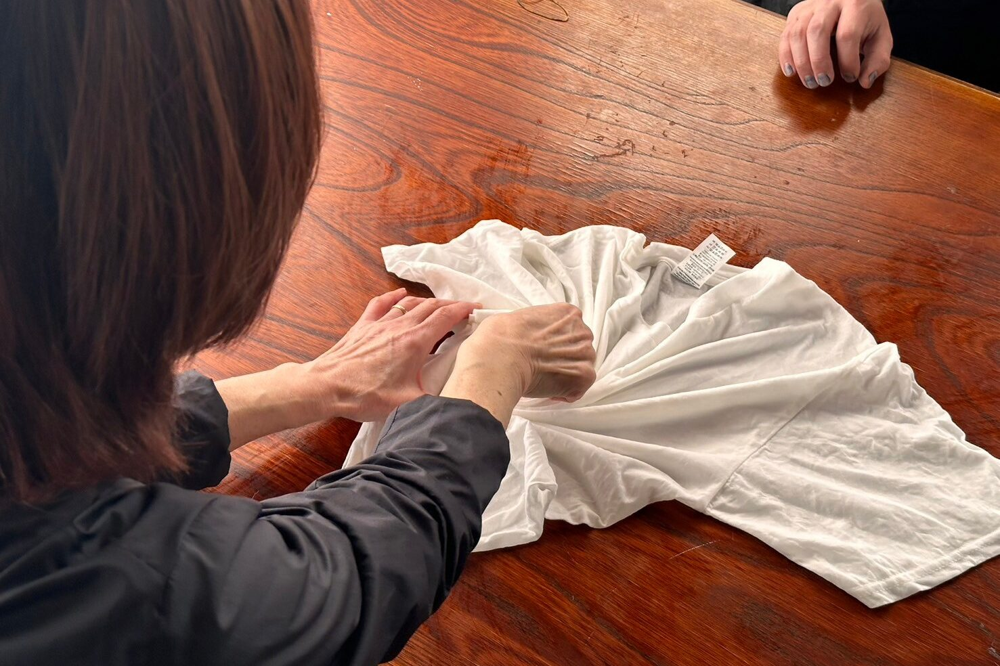
選んで、絞る
Design & Bind
染めるアイテムを選び、仕上がりをイメージしながら紐や輪ゴムでしっかりと縛ります。この縛り方で美しい模様が決まります。
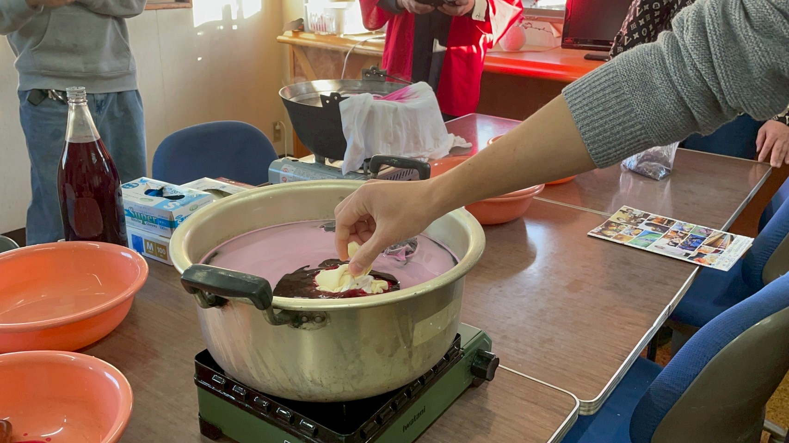
ワインで染める
Dyeing
ワインの醸造過程で生じる搾りかす（ワインパミス）を使った染色液に布を浸し、火にかけてじっくりと色を定着させます。
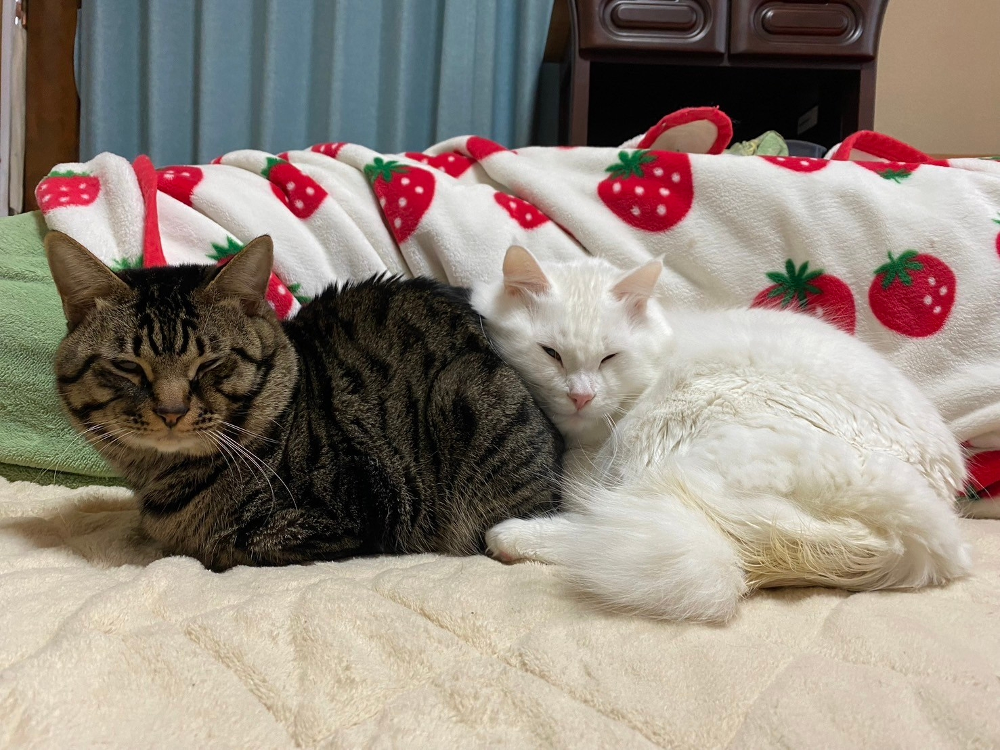
待ち時間も楽しく
Wait & Relax
色がしっかりと定着するまでの時間は、施設内の猫カフェ等でゆったりとおくつろぎください。
完成・記念撮影
Photo & Take Home
染め上がった作品は、その場でお持ち帰りいただけます。（水洗い等はご自宅で行っていただきます）最後はぜひ記念撮影を！
VOICE
体験されたお客様の声
「藍染めは以前やったことがありましたが、ワイン染めは初めて。工房全体にワインの良い香りがして、すごくリラックスできました。出来上がったピンク色も大人っぽくてお気に入りです！」
「山梨旅行の記念に参加しました。輪ゴムで縛る作業も楽しくて、待っている間は併設の猫カフェで癒やされました。産業廃棄物になってしまう葡萄皮を使ったサステナブルな取り組みというのも素敵ですね。」
「子供も楽しく参加できました。縛り方によって全然違う模様になるのが面白かったです！帰ってから自分で水洗いしてアイロンをかける仕上げの過程も楽しめました。」
FAQ
よくあるご質問
Q. 持ち物や指定の服装はありますか？
A. 特にございません。エプロン等をご用意しておりますが、万が一染料が飛んでも良い、動きやすい服装でお越しいただくことをおすすめします。（染めたいアイテムをお持ち込みいただくプラン以外は、基本的にすべて手ぶらでご参加いただけます）
Q. 当日、車で行っても大丈夫ですか？
A. はい、無料駐車場をご用意しております。
Q. お手入れはどうすればいいですか？色落ちしますか？
A. 自然染料のみでは色落ちしやすいため、風合いを損なわない範囲で定着液を使用しております。ご自宅でのお洗濯が可能です。中性洗剤（エマール・アクロン等のおしゃれ着用洗剤）を使用してお洗濯をお願いします。また、洗濯の回数が多くなれば多くなるほど色が淡くなっていきます。そちらは商品の特性にはなっておりますのでできる限り回数は少なくご使用頂けますと幸いです。
GALLERY
完成作品ギャラリー
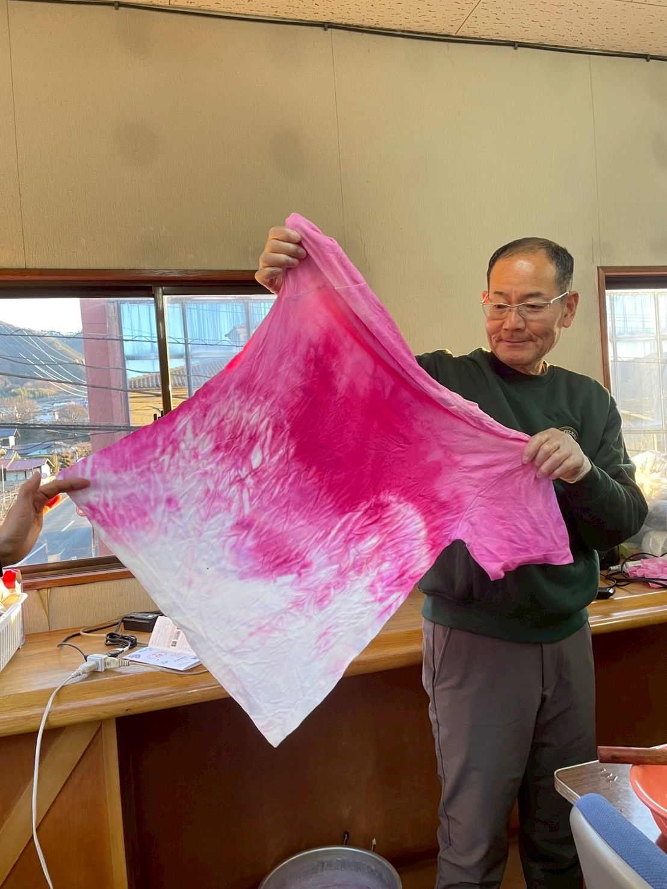
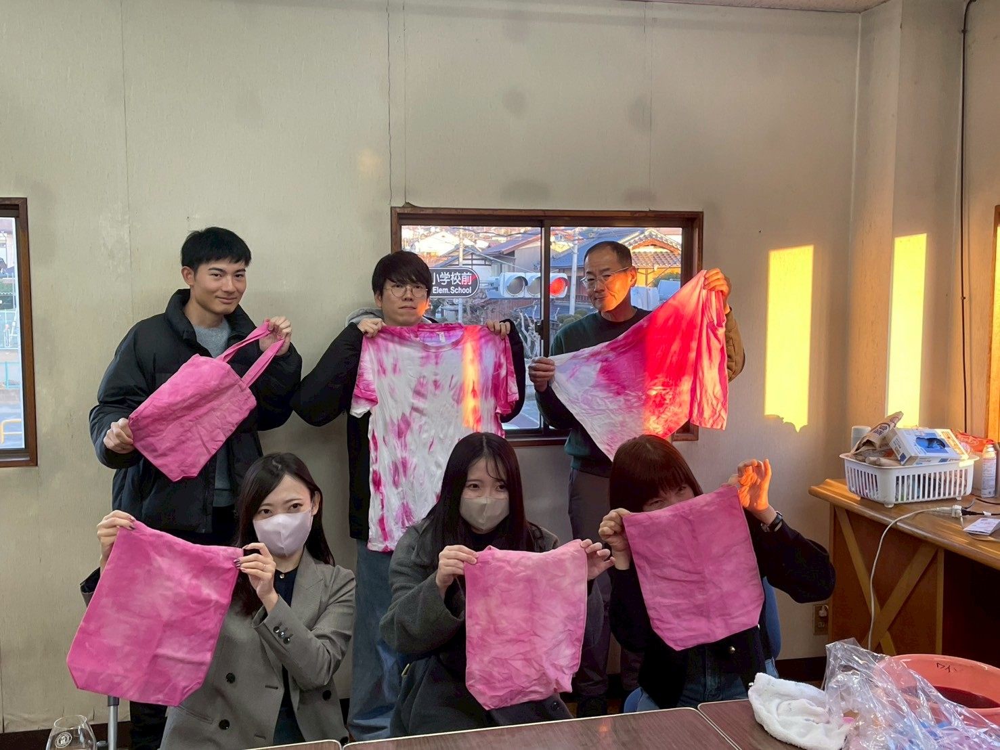
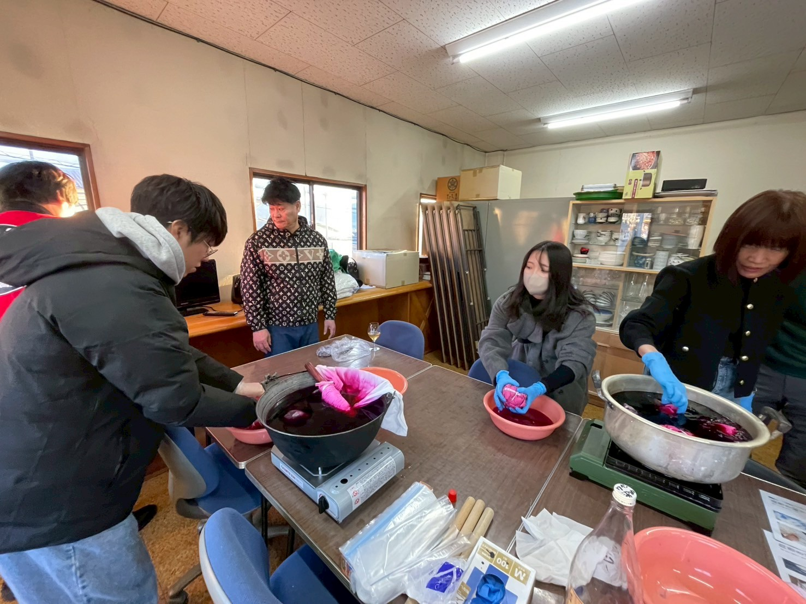
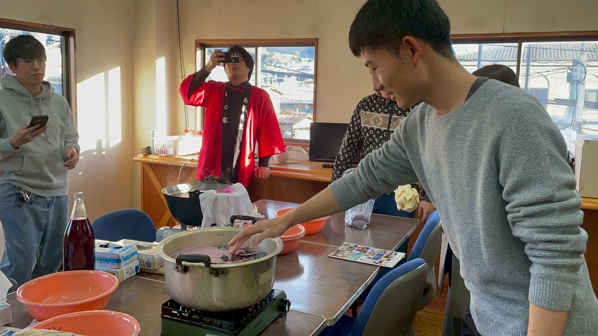
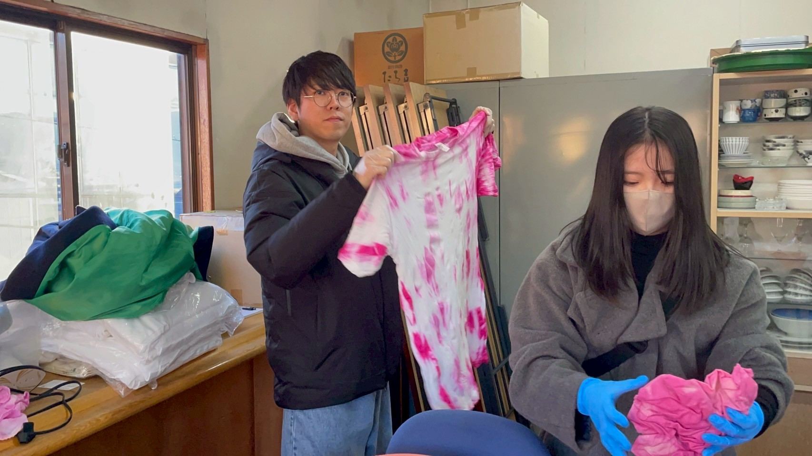
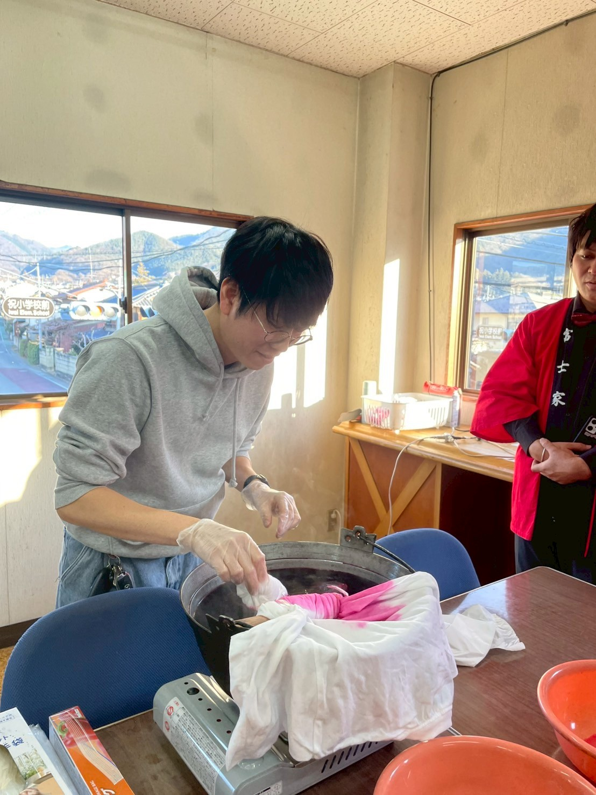